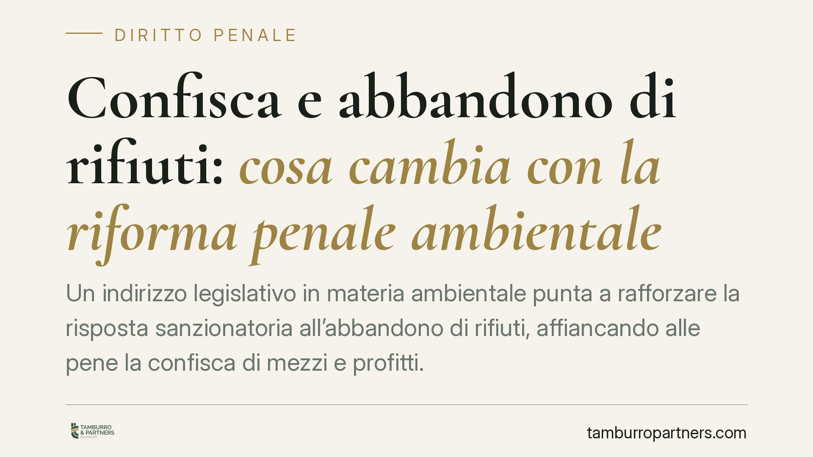

Confisca e abbandono di rifiuti: cosa cambia con la riforma penale ambientale
Un indirizzo legislativo in materia ambientale punta a rafforzare la risposta sanzionatoria all'abbandono di rifiuti, affiancando alle pene la confisca di mezzi e profitti. La questione interessa imprese della filiera dei rifiuti, autotrasportatori e privati. Spieghiamo cosa prevede oggi la normativa vigente, quali sarebbero gli effetti e come muoversi in modo prudente.

Il contesto
Secondo le anticipazioni di stampa, è allo studio un intervento volto a inasprire la reazione penale all'abbandono di rifiuti, prevedendo in particolare la confisca degli strumenti utilizzati per commettere il reato e dei profitti illeciti che ne derivano.
Una precisazione doverosa: alla data di questo contributo si tratta di un indirizzo legislativo riportato dalla stampa specializzata, non ancora tradotto in un testo normativo vigente e verificabile nei suoi contenuti definitivi. Le valutazioni che seguono vanno quindi lette come inquadramento del quadro attuale e delle possibili direttrici, non come commento a norme in vigore.
Inquadramento normativo
La disciplina dei rifiuti è contenuta nel Testo unico ambientale (D.lgs. 152/2006). L'art. 192 vieta l'abbandono e il deposito incontrollato di rifiuti.
La risposta sanzionatoria si articola su due piani distinti:
- Illecito amministrativo: l'art. 255 punisce con sanzione pecuniaria l'abbandono commesso dal privato (soggetto non titolare di impresa né responsabile di ente), fuori dai casi penalmente rilevanti.
- Reato (contravvenzione): l'art. 256 punisce con pena detentiva o ammenda chi gestisce rifiuti in assenza di autorizzazione, nonché, al comma 2, i titolari di imprese ed enti che abbandonano rifiuti.
È una distinzione decisiva: la stessa condotta materiale può ricadere in un regime amministrativo o penale a seconda della qualità del soggetto e delle modalità.
Sul versante della confisca, il riferimento generale è l'art. 240 c.p., che prevede tre forme: la confisca facoltativa delle cose che servirono a commettere il reato; la confisca obbligatoria nei casi tipizzati; e la cosiddetta confisca per equivalente, che colpisce beni di valore corrispondente al profitto quando non è possibile aggredire il profitto diretto.
Per gli enti, l'art. 25-undecies del D.lgs. 231/2001 include già numerose fattispecie ambientali, tra cui ipotesi dell'art. 256, tra i reati presupposto della responsabilità amministrativa dell'ente, con relative sanzioni interdittive e confische a carico della società.
Implicazioni pratiche
L'estensione sistematica della confisca ai mezzi e ai profitti dell'abbandono avrebbe un impatto concreto soprattutto sulle imprese.
Il primo effetto riguarda i mezzi strumentali: automezzi, container, attrezzature impiegate per il trasporto o lo smaltimento irregolare potrebbero essere sottoposti a sequestro preventivo e poi a confisca, con conseguenze operative ed economiche anche rilevanti.
Un punto tecnico va segnalato con onestà. Per le contravvenzioni ambientali dell'art. 256 l'applicabilità della confisca per equivalente non è pacifica: la giurisprudenza richiede, di regola, una espressa previsione normativa. L'effettiva operatività di questo strumento dipenderà quindi dalla formulazione definitiva della riforma. Darla per scontata sarebbe fuorviante.
Resta fermo un limite di sistema: la confisca incontra la tutela dei terzi estranei all'illecito. Il mezzo appartenente a un soggetto rimasto estraneo al reato, in buona fede, non è di norma confiscabile; chi subisce l'ablazione di un proprio bene ha diritto di far valere la propria estraneità.
Cosa fare in concreto
- Verificate la filiera dei rifiuti: controllate autorizzazioni dei trasportatori e dei destinatari, formulari di identificazione (FIR) e tracciabilità, per evitare di concorrere in condotte illecite altrui.
- Aggiornate il modello 231: adeguate il modello organizzativo ai reati ambientali presupposto ex art. 25-undecies D.lgs. 231/2001, con protocolli e deleghe effettive, non solo formali.
- Disciplinate l'uso dei mezzi aziendali: definite regole chiare su veicoli e attrezzature e documentate i controlli, elemento utile anche a dimostrare l'eventuale estraneità della società.
- Tutelate i terzi proprietari: se un bene sottoposto a sequestro appartiene a soggetto estraneo all'illecito, predisponete tempestivamente la documentazione a sostegno della sua posizione.
- Presidiate la fase cautelare: la fase in cui può essere disposto il sequestro preventivo finalizzato alla confisca è decisiva per contestare i presupposti e la proporzionalità della misura.
Una valutazione di sintesi
L'organizzazione documentale e la tracciabilità dei rifiuti costituiscono, sul piano tecnico, il presidio più solido: incidono sulla configurabilità stessa della responsabilità e sulla possibilità di dimostrare l'estraneità all'illecito. Il monitoraggio del testo definitivo sarà essenziale per misurare l'effettiva portata delle nuove misure ablative.
Contributo informativo a cura di Tamburro & Partners Avvocati. Non costituisce parere legale.
Ogni condominio ha una storia a sé.
Se gestisci un'amministrazione e vuoi un confronto su una specifica questione condominiale, scrivi allo studio. Ti rispondiamo entro un giorno lavorativo.